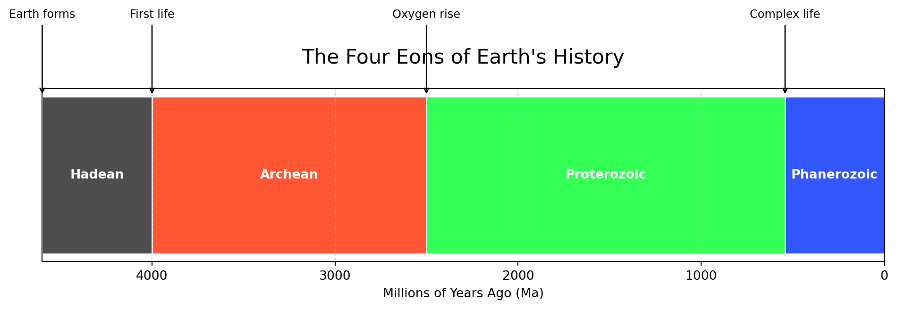

{kind=link}

3 Storia della Terra
Preserve and cherish the pale blue dot, the only home we’ve ever known.
Terra, quel piccolo puntino blu sospeso nella vastità buia dello spazio, è la nostra casa da circa 2,5 milioni di anni (dalla comparsa del genere Homo Habilis) ed è quindi logico e naturale iniziare il nostro percorso astronomico da essa. Le stime più recenti sull’età del nostro pianeta portano un valore di circa 4,567 miliardi di anni1: da quando è nato ha subito mutamenti radicali dal punto di vista geologico e climatico e, per altrettanti miliardi di anni, continuerà a fare altrettanto. Può sembrare strano che siamo in grado di fornire una stima molto precisa dell’età di un oggetto così massiccio ma possiamo farlo grazie ad alcuni minerali presenti sulla Terra, in particolare gli zirconi2 e dalle rocce lunari (\(\simeq\) 450 libbre) che le missioni Apollo hanno riportato a Terra dal nostro satellite. Gli zirconi sono in grado di intrappolare sin dalla loro formazione un atomo di uranio che col tempo decade in piombo (). Il tempo di dimezzamento dell’uranio () è noto, quindi, quantificando la frazione di piombo/uranio presente nello zircone, possiamo tornare indietro nel tempo e datare il minerale e la Terra. Prima di iniziare dobbiamo definire alcune condizioni entro le quali muoverci con facilità, formulare alcune ipotesi di base ed un punto di partenza, ovvero un istante di tempo dal quale iniziare la nostra storia. Anzitutto dobbiamo definire cosa è un pianeta secondo la UAI (Union Astronomique Internationale).
1 Per capire come si è arrivati ad una simile stima si veda § [par:nucleosintesi].
2 Essi sono minerali costituiti da ossido di zirconio ed altri elementi.
Definizione di pianeta
Un pianeta è un corpo celeste che:
- è in orbita attorno al Sole.
- Possiede una massa sufficiente la sua gravità gli faccia assumere una forma di equilibrio idrostatico (quasi sferica).
- lo spazio intorno alla sua orbita.
In base a questa definizione Plutone non soddisfa il terzo requisito, quindi nell’agosto 2006 è stato declassato a pianeta nano. definiamo cosa è un pianeta roccioso: un pianeta roccioso è un pianeta che possiede ulteriori caratteristiche relative alla sua composizione chimica e materiale.
Definizione
Un pianeta roccioso è un pianeta che è formato dai seguenti sei elementi o composizioni di essi: ossigeno, silicio, alluminio, ferro, calcio e magnesio.
Un pianeta roccioso è un pianeta che è formato dai seguenti sei elementi o composizioni di essi: ossigeno, silicio, alluminio, ferro, calcio e magnesio.
Questo significa che un pianeta roccioso possiede rocce, gemme e minerali di qualsivoglia struttura cristallina la cui composizione chimica contiene i sei elementi sopra elencati. Una definizione più estesa e lasca di pianeta roccioso, include nella lista anche altri tre elementi: sodio (), potassio () e nichel (). Dobbiamo ora definire un inizio, un istante \(\mathrm{t_{0}}\) a partire dal quale principiare la nostra storia.

Tutto è cominciato da una gigantesca nube di polvere di gas lasciata dai resti di precedenti supernove (costituite da idrogeno ed elio) che alla loro morte hanno generato i primi elementi metallici più pesanti3. Col passare del tempo ( anni) queste enormi nubi hanno subito il collasso gravitazionale ed hanno formato nuove proto stelle, tra cui il nostro Sole. Nelle sue prime fasi si vita il Sole era ancora instabile ed aveva un’attività molto frenetica caratterizzata da variazioni di luminisità e forti emissioni di radiazione X ad alta energia4. La nostra stella ha continuato ad accumulare materiale per 50 milioni di anni fino a che sotto elevati valori di temperatura e pressione è iniziata stabilmente la fusione dell’idrogeno in elio. Nel frattempo le particelle di polvere del disco di formazione con gli elementi più pesanti hanno iniziato a collidere e formare piccoli agglomerati di materia: un processo proseguito per migliaia di anni fino alla creazione dei primi protopianeti. Il processo di collasso continuò fino a quando solo i corpi più massicci rimasero tra questi: Mercurio, Venere, Terra e Marte. Questi pianeti avevano dimensioni modeste in quanto la percentuale di metalli a disposizione era più bassa rispetto alle altre sostanze più volatili della nube come idrogeno, elio, ghiaccio d’acqua \(\dots\) che, mosse verso l’esterno, hanno poi contribuito alla formazione dei giganti gassosi e ghiacciati. Noi partiremo poco prima di questo istante: si sono appena formati i nuclei di pianeti rocciosi ed il Sole ha iniziato in maniera stabile a produrre energia dalla fusione nucleare dell’idrogeno, ovvero è entrato in sequenza principale.
Poniamo quindi \(\mathrm{t_{0} = 50}\) milioni di anni e, seguendo i principi della geologia, suddividiamo la storia della Terra in quattro eoni5.
3 In astronomia ogni elemento della tavola periodica che segue l’elio è considerato, anche se impropriamente, un metallo. In particolare le supernove sono in grado di produrre per nucleosintesi gli elementi più pesanti del ferro on un processo chiamato processo r.
4 Questa fase che precede la sequenza principale si chiama fase T Tauri.
5 L’eone è la più estesa unità cronologica in cui è stata divisa l’età della Terra.
- Adeano
- Archeano
- Proterozoico
- Fanerozoico
Ogni eone è suddiviso in periodi ed epoche. Analizziamo in dettaglio gli eventi più significativi di ogni periodo, eventualmente aggiungendo un’ulteriore suddivisione: le date che accompagnano il periodo rappresentano gli anni trascorsi dalla formazione del Sistema Solare.
3.0.1 Adeano
Età della Terra: 50 milioni. In principio la Terra è una massa informe di lava incandescente, un vero e proprio inferno. Si tratta del periodo più remoto della storia della Terra: i geologi lo hanno chiamato Adeano. La temperatura della Terra è di circa °C e ruota velocemente su sé stessa: un giorno dura cinque ore. A causa della sua rotazione la forma della Terra è ovalizzata, ovvero schiacciata ai poli e condivide la sua fascia orbitale intorno al Sole con un altro pianeta dalle dimensioni di Marte chiamato Theia. Come un valzer gravitazionale, entrambi i pianeti stanno cercando un punto di stabilità orbitale all’interno del Sistema Solare, e si scontrano. Non possiamo sapere con che modalità sia avvenuto: se l’impatto sia stato frontale o laterale, ma di sicuro lo scontro è violento e i nuclei di entrambi i pianeti si compenetrano. I frammenti restanti si accumulano per accrescimento sul disco di rotazione terrestre e si forma la Luna. Il nostro satellite orbita vorticosamente intorno alla Terra: una rotazione impiega otto ore e causa maree consistenti sulla lava fusa che si trova sulla fascia equatoriale terrestre. La Terra inizia a disperdere calore.
Adeano (età della Terra: 100 milioni). La Terra continua il suo processo di raffreddamento, la temperatura diminuisce, la massa di lava fusa inizia lentamente il suo processo di solidificazione. La lava è composta da minerali e rocce vulcaniche la cui composizione è basata sui sei elementi descritti in precedenza, quindi il processo di solidificazione non avviene ad un’unica temperatura. Probabilmente il processo di solidificazione inizia dai poli, dove minore è la forza mareale. Iniziano a formarsi una prima superficie solida che galleggia sul magma infuocato. Composti diversi hanno temperature di fusione diverse, quindi il processo di solidificazione comincia a partire dai minerali che hanno il punto di solidificazione più alto. Si formano quindi minerali come l’olivina (), anortite, anortosite, pirosseni, feldspati e l’enstatite () ed altri composti piroclastici. In funzione del loro peso specifico questi minerali precipitano sul fondo della sfera terrestre fino a trovare l’equilibrio idrostatico che li fissa ad una certa profondità dalla superficie terrestre: i più densi troveranno posizione più vicini al nucleo terrestre, gli altri nel mantello ed altri ancora vicino alla superficie.
Adeano
La solidificazione della superficie prosegue fino a formare una prima superficie nera dove il basalto ( – ), una roccia nera effusiva. Essa costituisce il composto principale che galleggia sul magma infuocato sottostante.
La solidificazione della superficie prosegue fino a formare una prima superficie nera dove il basalto ( – ), una roccia nera effusiva. Essa costituisce il composto principale che galleggia sul magma infuocato sottostante.
Con il passare del tempo la Terra diventa una sfera di basalto e dalle crepe infernali escono quantità enormi di anidride carbonica (), azoto (), metano () e (poca) acqua: l’atmosfera è totalmente irrespirabile: non c’è traccia di ossigeno (), sebbene la Terra ne sia piena. Dove si trova, quindi? L’ossigeno si trova tutto sotto i piedi: nei composti, minerali e rocce. Sulla superficie l’elettricità statica crea lampi, fulmini, tempeste e forti venti: la vita non può ancora esistere.
Adeano (età della Terra: 200 milioni). La Terra continua il suo processo di raffreddamento e si formano altri composti: la temperatura scende fino a permettere la solidificazione del granito. Il granito ha un peso specifico inferiore al basalto, quindi cerca di farsi largo nelle crepe ancora lasciate aperte sulla superficie, spunta e si erge sopra il basalto dando origine ai prime piccole montagne.
Adeano
Ormai la Terra è uno sferoide solido la cui superficie ha assunto il colore grigio dovuto al granito: è diventato un pianeta roccioso.
Ormai la Terra è uno sferoide solido la cui superficie ha assunto il colore grigio dovuto al granito: è diventato un pianeta roccioso.
Adeano (età della Terra: 300 milioni). La Terra non è l’unico pianeta del Sistema Solare: contemporaneamente ad essa si sono formati anche i giganti gassosi che non si trovano nella posizione che conosciamo oggi, ma molto più vicini. Secondo l’ipotesi della Grande Virata, Giove e gli altri gassosi in quel periodo si trovano molto vicino alla Terra, e anch’essi, come la Terra, stanno cercando la loro valle di stabilità all’interno del Sistema Solare. Giove e Saturno, i due principali pianeti gassosi, entrano così in risonanza tra loro, le loro orbite si allargano e si spostano verso l’esterno, oltre la linea della neve del Sistema Solare (circa 5 AU all’epoca).
Su queste orbite esterne si trova il materiale che non è riuscito ad aggregarsi per formare un nuovo pianeta del Sistema Solare sotto forma di asteroidi, nuclei cometari ed altri corpi rocciosi. Questi oggetti possiedono al loro interno e sulla superficie enormi quantità di molecole complesse basate sul carbonio (amminoacidi) insieme ad ammoniaca (), in forma solida e tantissimo ghiaccio d’acqua. Questa Grande Migrazione dei giganti gassosi e ghiacciati provoca un’altrettanta migrazione dei corpi rocciosi minori verso l’interno del Sistema Solare, i quali si abbattono sui pianeti interni, tra cui Mercurio, Marte, Luna e, ovviamente la Terra. La Terra è sede di un continuo e incessante di bombardamenti meteorici per circa centinaia di milioni di anni: gli asteroidi cadono sulla Terra e portano con sé le prime molecole che costituiscono la vita e una grande quantità d’acqua. Inizialmente l’acqua evapora o sublima le condizioni (Pressione, Temperatura) ancora lo consentono, ma poco a poco le condizioni di temperatura favoriscono la condensazione e le gocce si accumulano in terra ed in atmosfera. Col tempo si forma un unico immenso oceano: questo lo sappiamo dall’analisi isotopica dell’ossigeno (esso si presenta in natura sotto forma di tre isotopi: (\(\ce{^{16}O}\), \(\ce{^{17}O}\) e \(\ce{^{18}O}\)) intrappolato all’interno dello rocce contenente zirconio, un minerale durissimo e uno dei più antichi presenti sulla Terra6.
Dato che la Terra in quel periodo era in grado di trattenere acqua allo stato liquido in superficie, significa che si trovava già nella zona abitabile del Sistema Solare (CHZ, Circumstellar Habitable Zone). Il Sole all’epoca era circa il 30% meno luminoso di oggi, quindi si ipotizza che la Terra dovesse avere un’atmosfera molto densa e ricca di e con una condizione (P,T) in grado di sostenere l’acqua allo stato liquido (paradosso del Sole debole).
6 Lo zircone un minerale composto da ossidi di zirconio, consente di datare l’età della Terra grazie al fatto che è in grado di intrappolare anche un atomo \(^{238}\)U che col tempo decade in \(^{208}\)Pb. Quantificando le loro frazioni percentuali i geologi hanno stimato un’età media della Terra di \(4,567\) miliardi di anni.
Adeano
La Terra cambia nuovamente colore, l’immenso oceano le dona un colore azzurro.
Adeano (età della Terra: 500 milioni) La Terra è azzurra, e la terraferma è concentrata in un unico grande continente (probabilmente al polo sud) chiamato Rodinia. È a partire da questo periodo che si fa partire l’origine della vita: il dibattito è ancora aperto e ci sono diverse ipotesi. I primi microorganismi sono batteri monocellulari localizzati nelle profondità del mare, ancora non esposti alla luce del Sole, che traggono energia dalle rocce, presso i camini vulcanici utilizzando fotosintesi anossigenica (senza ossigeno) sfruttando il calore generato dal camino e l’acido solfidrico:
\(6 \ce{CO2} + 12 \ce{H2S} -> \ce{C6H12O6} + 6 \ce{H2O} + 12 \ce{S}\)
Questi organismi chiamati procarioti, non hanno organi interni e potrebbe essere che sfruttino per il proprio sostentamento anche i processi di organizzazione e di mineralizzazione delle rocce. Ancora non è noto il processo per cui molecole complesse basate sul carbonio siano intervenute nel processo della nascita e formazione della vita: probabilmente si trattava di un mondo a RNA, ovvero basato solo sull’acido ribonucleico, la molecola responsabile del processo di ereditarietà generica dell’organismo.
Archeano (età della Terra: 600 milioni). I primi organismi monocellulari (procarioti) sono già attivi nell’oscurità delle acque e dove ancora non arriva la luce. La temperatura della Terra è simile a quella attuale e diminuisce la concentrazione di metano. Mano a mano che gli organismi prolificano, la vita si sposta sempre più in superficie e cambia il processo biochimico di base: i procarioti iniziano a sfruttare la luce del Sole che traspare dall’acqua per iniziare la fotosintesi ossigenica, più efficiente di quella anossigenica:
Tra i prodotti di scarto della fotosintesi prodotta dai cianobatteri c’è l’ossigeno che inizia ad accumularsi in atmosfera.
Archeano (età della Terra: 1 miliardo). L’ossigeno, prodotto di scarto dei procarioti, è un elemento altamente reattivo in grado di ossidare (ovvero in grado di acquistare elettroni), quindi non rimane in atmosfera, ma partecipa alle reazioni di ossido-riduzione.
Definizione
L’ossigeno inizia ad ossidare tutto ciò che trova sulla terraferma dando inizio al processo di creazione di strati di roccia sedimentaria con diverso grado di ossidazione chiamata BIF (Band Iron Formation). Queste bande cambiano ancora una volta il colore della Terra di un colore rosso.
L’ossigeno inizia ad ossidare tutto ciò che trova sulla terraferma dando inizio al processo di creazione di strati di roccia sedimentaria con diverso grado di ossidazione chiamata BIF (Band Iron Formation). Queste bande cambiano ancora una volta il colore della Terra di un colore rosso.
Con il passare delle epoche e dei movimenti delle placche tettoniche le BIF si sono spostate ed ora si trovano principalmente sui fondali degli oceani.
3.0.2 Archeano
Età della Terra: 1,5 miliardi. La produzione di ossigeno non si ferma e non avendo più a disposizione rocce esposte da ossidare, si accumula in atmosfera cambiandone per sempre le sue caratteristiche. Gli scienziati chiamano questo processo GEO (Grande Evento Ossidativo) oppure Catastrofe dell’Ossigeno. Il Sole aumenta la sua capacità radiante e raggiunge circa 85% di quella attuale.
3.0.3 Proterozoico
Età della Terra: 2 miliardi. La vita sulla Terra evolve: con il tempo gli organismi procarioti (organismi unicellulari) lasciano spazio ai primi eucarioti (organismi multicellulari). Per meccanismi ancora non del tutto noti, probabilmente per endosimbiosi, i procarioti vengono inglobati e fagocitati da altri procarioti: il nuovo essere vivente (eucariota) rappresenta l’embrione di un organismo multicellulare composto da un mitocondrio ed una membrana esterna. Al tempo stesso i cianobatteri che ancora basano la loro esistenza consumando rischiano di estinguersi e per sopravvivere devono trovare una nicchia ecologica entro la quale continuare a esistere.
Proterozoico (età della Terra: 2,5 miliardi). La vita è apparentemente tranquilla: per un altro miliardo di anni non ci saranno grossi cambiamenti al nostro pianeta. In realtà la Natura lavora incessantemente: in questo periodo di apparente calma (noto come miliardo noioso) la Natura lascia che l’evoluzione darwiniana faccia il suo corso, anche con tentativi fallimentari. E anche il periodo della rivoluzione minerale, ove si formano nuove tipi di rocce.
Proterozoico (età della Terra: 3,5 miliardi). La Terra si trova nel Neo Proterozoico ma un nuovo evento di portata planetaria sta per abbattersi su di essa. Lentamente la temperatura superficiale si abbassa e i ghiacciai aumentano di estensione: lo strato di ghiaccio superficiale causa un aumento di albedo del pianeta ed aumenta così la quantità di radiazione dispersa, ed il pianeta si raffredda ancora di più.
Come in un meccanismo di feedback positivo l’abbassamento di temperatura favorisce l’ulteriore estensione dei ghiacciai fino a che essi non ricoprono l’intera superficie terrestre: la terra diventa un pianeta ghiacciato come una palla di neve (modello Snow Ball) e si colora di bianco.
Alcuni geologi non sono d’accordo sul modello Snow Ball e sostengono che la Terra non fosse completamente ricoperta di ghiaccio, ma esistesse una fascia equatoriale non ghiacciata di acqua mista neve ove la luce solare poteva ancora filtrare sott’acqua e rendere ancora possibile il processo di fotosintesi (modello Slush Ball). Sulla superficie la vita sparì ma non nei fondali oceanici, presso i camini per attendere migliori condizioni. Probabilmente la frantumazione di Rodinia ha esposto una maggiore quantità di basalto all’azione degli effetti atmosferici (oramai ricca di ossigeno), che avrebbe favorito l’intrappolamento per reazione chimica di . La costituisce un potente gas serra (il secondo, dopo il vapore acqueo) e la sua diminuzione in atmosfera ha innescato il meccanismo di abbassamento delle temperature e estensione dei ghiacciai a cascata.
Col passare del tempo, i vulcani e l’attività geotermica tornarono a immettere in atmosfera , i ghiacciai iniziarono a sciogliersi e la Terra uscì dall’inverno bianco. Lo scioglimento dei ghiacciai ha lasciato tracce geologiche attraverso i tilliti, un tipo di rocce molto dure deposte e lavorate dai ghiacciai in ritirata. Il livello di ossigeno in atmosfera aumenta ancora, (secondo evento ossidativo) e si accumula una grossa quantità di fosforo e manganese lungo le coste dovuto alla putrefazione dei batteri. L’ossigeno in atmosfera reagisce con i raggi solari dello spettro UV, e si forma la fascia l’ozono () fra i 35 e 40 km di altezza. Alla fine del Proterozoico l’atmosfera è potenzialmente “respirabile” per un ipotetico essere umano: la Terra è protetta dalle radiazioni UV e microorganismi multicellulari si trovano su tutto il globo.
3.0.4 Fanerozoico
Età della Terra: 4 miliardi. L’ultimo eone della Terra si apre con la divisione di Rodinia, fino ad allora l’unico grande continente terrestre: esso si divide in Laurentia e Godwanda, quindi si riunisce di nuovo formando un secondo unico grande continente (Pangea) e un unico grande oceano (Pantalassa). Ora gli eventi si spostano sulla terraferma, ove l’evoluzione mostra appieno i suoi risultati a partire dall’Esplosione Cambriana. Negli ultimi 567 milioni di anni, la Terra subisce mutamenti radicali: oltre a periodi di instabilità climatica ove si alternano periodi caldi e glaciazioni (altre 3 glaciazioni). Ecco una breve lista degli eventi principali:
- 520 milioni di anni fa: i trilobiti (artropodi) dominano lo scenario per 250 milioni di anni circa.
- 440 milioni di anni fa: estinzione di massa Ordoviciana.
- 530 milioni di anni fa: le piante con parti dure fanno la loro apparizione.
- 375 milioni di anni fa: estinzione di massa Devoniana.
- 360 milioni di anni fa: presenza degli anfibi.
- 325 milioni di anni fa: presenza dei rettili.
- 300 milioni di anni fa: terzo evento ossidativo.
- 250 milioni di anni fa: la Grande Estinzione alla fine del Permiano.
- 225 milioni di anni fa: fanno il loro ingresso i dinosauri.
- 200 milioni di anni fa: estinzione del Triassico.
- 150 milioni di anni fa: presenza degli uccelli.
- 130 milioni di anni fa: presenza delle prime piante a fiore.
- 65 milioni di anni fa: l’estinzione del Cretaceo pone fine al dominio dei Dinosauri. I mammiferi (esseri più piccoli) domineranno la Terra.
- 2 milioni di anni fa: primi ominidi (Homo).

Negli ultimi cinque miliardi di anni circa, la Terra è sopravvissuta a cinque glaciazioni e cinque grandi estinzioni di massa (avvenute a forme di vita complesse) e continuerà a cambiare sia geologicamente che dal punto di vista climatico in continuazione, anche molto prima del momento in cui Sole uscirà dalla sequenza principale del diagramma H-R (Hertzsprung-Russell, si veda § [par:HR]). Il Sistema Solare infatti è un sistema caotico e attualmente non siamo in grado di prevederne la stabilità con un orizzonte temporale più esteso di 100 milioni di anni. Per quel tempo, della specie vivente Homo Sapiens Sapiens, rimarrà solo un ricordo sotto forma di reperti fossili.
3.1 I NEO
Le meteore, al contrario, sono semplicemente dei fenomeni astronomici di tipo luminoso, che si originano quando un asteroide o un meteoroide entra in collisione con l’atmosfera terrestre. In seguito a questo scontro, si genera un attrito che rilascia elevata energia, sotto forma di luce.
La possibilità di vedere una meteora nel cielo (stella cadente) è un fenomeno che può accadere in qualsiasi notte dell’anno: ci sono, però, dei periodi in cui se ne osservano più della media. Si parla così di sciami meteorici.
Meteoroide: un piccolo corpo roccioso che orbita intorno al Sole.
Meteora: una striscia di luce causata da un meteoroide che brucia nell’atmosfera terrestre.
Bolide: una meteora molto luminosa.
Meteorite: un meteoroide che raggiunge la superficie terrestre.
3.1.1 Principali sciami meteorici
Quadrantidi, Liridi, Eta Aquaridi, Perseidi, Geminidi sono i nomi dei principali sciami meteorici che illuminano il nostro cielo, durante specifici periodi l’anno.
Le Quadrantidi sono uno sciame meteorico visibile nel mese di Gennaio.
Le Liridi sono uno sciame meteorico osservabile nel mese di Aprile, rivolgendo lo sguardo verso la costellazione della Lira: lo sciame meteorico delle Liridi è uno tra i più antichi. Lo sciame è generato dalla cometa C/1861 G1.
Eta Aquaridi sono uno sciame meteorico osservabile verso i primi giorni di Maggio, dirigendo lo sguardo verso la costellazione dell’Aquario. Eta Aquaridi provengono da una stella cometa madre: la cometa di Halley.
Perseidi: è osservabile nel mese di agosto, La stella cometa originatrice è 109P/Swift-Tuttle, che passa vicino al nostro pianeta Terra ogni 133 anni.
Le Geminidi sono lo sciame meteorico del mese di Dicembre, ben visibile a livello della costellazione dei Gemelli.
3.2 I NEA
I Near Earth Asteroid sono corpi rocciosi (asteroidi e comete) costituiti dai detriti rimasti dalla formazione del Sistema Solare che orbitano intorno al Sole: il principale interesse scientifico riguarda la loro composizione in quanto ci rivelano la chimica di 4,6 miliardi di anni fa. Essendo le loro orbite molto caotiche, anche una piccola perturbazione gravitazionale come un passaggio ravvicinato con un altro oggetto celeste è in grado, sul lungo periodo, di cambiare la loro traiettoria fino ad intersecare l’orbita terrestre.
Definizione
Dal punto di vista della meccanica celeste il CNEOS (Centre for Orbital Study) definisce NEO asteroidi e comete con q < 1.3 AU. I NEA invece sono una particolare sottoclasse dei NEO a cui appartengono solo asteroidi.
Dal punto di vista della meccanica celeste il CNEOS (Centre for Orbital Study) definisce NEO asteroidi e comete con q < 1.3 AU. I NEA invece sono una particolare sottoclasse dei NEO a cui appartengono solo asteroidi.
La pericolosità dei NEA è un secondo motivo di interesse non trascurabile: anche se asteroidi con diametri piccoli hanno una grossa probabilità di bruciare durante l’ingresso in atmosfera terrestre, un’eventuale collisione con un oggetto di 1 km di diametro, per esempio, può provocare danni ingenti ad un’intera area metropolitana.
Per prevenire situazioni del genere ci sono programmi ESA e NASA che osservano il cielo alla scoperta di nuovi oggetti (si pensa che ce ne siano ancora migliaia da scoprire) per migliorare le conoscenze sulle loro orbite e individuarne la pericolosità. Il CNEOS classifica i NEA nelle seguenti quattro classi:
Amor: questi asteroidi hanno un’orbita completamente esterna a quella terrestre ma un perielio inferiore a 1.3 AU. Sono così chiamati dal loro capostipite familiare, ovvero 1221 Amor, scoperto da Eugéne Delporte7 nel 1932.
Apollo: questi asteroidi hanno un semiasse maggiore più grande di quello terrestre. Sono così chiamati dal loro capostipite familiare, ovvero 1862 Apollo. L’oggetto più grande è 1866 Sisyphus con un diametro di 848 km. Il meteorite che si disintegrò sopra i cieli di Chelyabinsk apparteneva a questa famiglia. Alcuni di questi oggetti sono classificati come pericolosi.
Aten: questi asteroidi hanno un semiasse maggiore più piccolo di quello terrestre. Sono così chiamati dal loro capostipite familiare 2062 Aten, un oggetto con un diametro di 1,1 km scoperto nel 1976. Alcuni di questi oggetti sono classificati come pericolosi: il più grande ad oggi è 3554 Amun con un diametro di 3,3 km.
Atira: questi asteroidi hanno un’orbita interamente contenuta entro l’orbita terrestre. è il gruppo meno numeroso con appena 32 oggetti. Sono così chiamati dal loro capostipite familiare 163693 Atira scoperto nel 2003.
7 Eugéne Joseph Delporte (1882–1955) è stato un astronomo belga.
I NEA che posso portare un potenziale impatto con il nostro pianeta sono classificati come pericolosi (PHA, Potentially Hazardous Asteroid). Tecnicamente vengono definiti pericolosi i NEA con:
Distanza minima di intersezione orbitale è inferiore a 0.05 UA (\(moid < 0.05\)).
Magnitudine assoluta inferiore a 22 (\(\mathrm{H < 22}\)).
Ci sono circa oggetti in questo gruppo, la maggior parte appartengono alla classe Apollo. L’uso di modelli di Machine Learning si rivela molto utile per aiutare il lavoro degli astronomi nella classificazione di questi oggetti celesti sia in base alla pericolosità che alla classe di appartenenza. Si tratta di un esempio di algoritmi per la classificazione con etichette applicato al campo dell’astronomia. Per quanto riguarda la seguente l’analisi [@NEA_analisys_conference] verranno utilizzati tre distinti algoritmi per l’analisi PHA:
K-Neighbors
Decision Tree
Random Forest
Per la classificazione del gruppo di appartenenza (Aten, Apollo, Aten ed Atira) verranno utilizzati i seguenti due algoritmi:
K-Neighbors
Decision Tree
Il Machine Learning, un campo dell’Intelligenza Artificiale, sostiene il lavoro dell’essere umano, soprattutto nei casi di compiti ripetitivi che possono essere automatizzati ma non lo solleva dal controllo dei risultati forniti dagli algoritmi e dalla validità e consistenza dei dati di ingresso (bias, numerosità e rappresentatività del campione …).
Il dataset di input è liberamente scaricabile dal sito del CNEOS. Tramite un’interfaccia web è possible selezionare la lista le caratteristiche degli oggetti interessati all’analisi: nel nostro caso le quattro classi di oggetti NEA (esclusi oggetti cometari) con i principali attributi (caratteristiche e parametri orbitali). Si inizia con un’esplorazione generica dei dati per:
Eliminare dal dataset i valori incompleti.
Rimuovere le colonne inutili all’analisi (esempio gli indici BV, UB).
Rimuovere le colonne con valori nulli (H, diametro, classe).
Rinominare le classi orbitali (0, 1, 2, 3) al posto di AMO, ATE, APO ed IEO.
Rinominare il tipo di NEA (PHA, non PHA) con una codifica binaria.
Si ottiene quindi un’idea generale del dataset. Si procede quindi alla partizione dell’insieme per classe e tipo e si visualizzano graficamente le caratteristiche comuni (numerosità complessiva e per tipo, percentuale di PHA …) come riportato nei grafici8 nelle figure seguenti: 1.4, 1.5, [fig:NEA_Distribution_3], 1.6 e 1.7.
8 Tutti i diagrammi ed i grafici sono stati realizzati dall’autore in Python: il sorgente è disponibile all’indirizzo [@Fumagalli].


Ci sono oggetti NEA: dalla figura 1.8 si evince che circa il 7% dei quali è classificato PHA: i NEA hanno un diametro medio di 1,3 km (esclusi quelli per i quali questo campo non è valorizzato). Gli asteroidi PHA hanno un mediamente un diametro un poco più piccolo. Dato che gli asteroidi non hanno una forma sferica ma sono generalmente irregolari, il valore del diametro riportato nel dataset si intende un diametro equivalente che, eventualmente può anche essere stimato dalla magnitudine assoluta H ed albedo, oppure da alcune tabelle di confronto del CNEOS. Ovviamente se manca anche solo di uno dei due fattori la stima è impossibile.
La classe Apollo è la più numerosa, seguita dagli Amor, inoltre il numero di NEA scoperti è costantemente cresciuto negli ultimi anni, ma molti di essi (si stima migliaia) sono ancora in attesa di essere scoperti. Il gruppo più piccolo e più giovane (Atira) contiene solamente 32 elementi. La classe Apollo inoltre contiene il maggior numero di oggetti pericolosi (più di ) seguita in percentuale dagli Amor.
Dalla distribuzione delle dimensioni, più grande è l’oggetto, minore è la sua numerosità e quindi anche la probabilità che possa eventualmente causare un impatto sul nostro pianeta. Si stima che un oggetto dal diametro maggiore di 10 km ha una frequenza di impatto di un singolo evento ogni 50 milioni di anni, mentre un oggetto dal diametro compreso fra 30 metri e 100 metri ha una frequenza di impatto di un evento ogni 500 anni. L’analisi dei dati prosegue con il disegno dei diagrammi di dispersione dei principali parametri orbitali: si tratta di grafici in cui i valori di due variabili sono riportati su due assi cartesiani e l’aggregazione dei punti risultanti indica il livello di correlazione o meno tra tali variabili. Ecco i diagrammi scatter nelle figure seguenti che riportano:
Eccentricità vs diametro: figura 1.11.
Semiasse maggiore vs diametro: figura 1.9.
Perielio vs moid: figura 1.10.
Semiasse maggiore vs eccentricità: figura 1.12.


ed i diagrammi di distibuzione della densità dei parametri orbitali dei NEA per tipo di oggetto e pericolosità. Segue il tracciamento delle orbite di un sottoinsieme di NEA (figure [fig:NEA_3D_1] e 1.13), in particolare sono selezionate le orbite di 50 asteroidi per ogni classe, ovvero \(\mathrm{50 \times 4=200}\) asteroidi in totale.
Le orbite sono state tracciate per integrazione della soluzione a partire dai parametri orbitali e propagando l’orbita per un periodo di un anno.
Per confronto sono riportate anche le orbite della Terra e la posizione del Sole: un numero maggiore di orbite avrebbe comportato calcoli più lunghi e pesanti, pertanto si è scelto un compromesso: si nota che la distribuzione degli Atira (arancione) è contenuta completamente in quella terrestre mentre gli Amor (viola) completamente esterna (coerente alla definizione).
3.3 I modelli di Machine Learning
Dopo aver introdotto l’argomento, procediamo alla costruzione di due sistemi di classificazione con supervisione dei NEA. L’obiettivo è di classificare i NEA per:
Pericolosità (PHA, non PHA).
Tipo (ATE, APO, AMO ed IEO).
Gli algoritmi con supervisione sono una classe di algoritmi di classificazione che si basano su un modello di addestramento etichettati per fare una previsione su nuovi dati.
Il modello di riferimento per entrambe le classificazioni è mostrato in figura: 1.14. A partire dal dataset iniziale, per entrambe le classificazioni vengono eseguiti i seguenti passi:
Si filtra il dataset mantenendo le componenti \(X\) sono necessari alla classificazione:
\(moid, H\) per la classificazione di pericolosità.
\(a, q, Q\) per la classificazione di tipo.
Si identifica la componente \(Y\) di stima (oggetto della stima):
Per la classificazione di pericolosità (PHA).
Classe per la classificazione di tipo.
Si sostituisce l’etichetta della componente di stima con una enumerazione, per ognuna delle due analisi.
Si normalizzano i dati in un’unica scala commensurabile uguale ad ogni caratteristica: una distribuzione \(\mathrm{\mathcal{N} \left( \mu=0, \sigma=1 \right)}\).
Si suddivide il dataset in due parti:
\(\mathrm{X_{train}=40\%}\) del dataset \(\mathrm{X}\) usato come training per l’algoritmo.
\(\mathrm{X_{test}=60\%}\) del dataset \(\mathrm{X}\) usato come test e validazione dell’algoritmo.
\(\mathrm{Y_{train}=40\%}\) del dataset \(\mathrm{Y}\) usato come training per l’algoritmo.
\(\mathrm{Y_{test}=60\%}\) del dataset \(\mathrm{Y}\) usato come test e validazione dell’algoritmo: costituisce la baseline di riferimento.
Si costruisce il modello matematico \(\mathrm{Y_{train} = M\left( X_{train}\right)}\).
Si applica il modello M per stimare \(\mathrm{Y_{pred} = M\left( X_{test}\right)}\).
Si valuta la bontà del modello confrontanto \(\mathrm{Y_{pred}}\) con \(Y_{test}\) costruendo la matrice di confusione.
Si calcolano i principali indici statistici (metriche) di validazione: precisione, accuratezza ed F1.

Le tre principali metriche sono rappresentate da:
Accuratezza: che risponde alla domanda quanto le predizioni sono vere?
Precisione: che risponde alla domanda fra tutte quelle positive/negative, quante sono vere?
Richiamo: ovvero fra tutte quelle che dovrebbero essere previste come vere, quante lo sono veramente? (errore del primo tipo)
Indice F1: misura statistica che combina richiamo e precisione.
3.3.1 Classificazione NEA per pericolosità
L’obiettivo è presentare un modello statistico \(\mathrm{Y=M\left( X\right)}\) in grado di classificare i NEA in due classi: NEA pericolosi (PHA) o NEA non pericolosi (non PHA). Vengono presentati i risultati di tre modelli: Support Vector Machine (SVM), K-Neighbors e Decision tree. Per maggiori dettagli riguardo il principio di funzionamento di ogni modello si rimanda ai link visualizzati nei diagrammi presenti nelle figure [fig:Model_SVM], 1.15 e 1.16.

SVM: questo classificatore separa i punti usando un iperpiano con il massimo margine di separazione. L’algoritmo lavora in maniera iterativa individuando l’iperpiano ottimale (massimo) che separa il dataset in due zone entro i quali i nuovi dati verranno classificati minimizzando l’errore.

Risultati SVM: Il modello possiede un’accuratezza del %. Classifica molto bene i NEA della classe PHA, tuttavia presenta poca precisione. La matrice di confusione mostra che il modello presenta molti errori, in particolare sulla diagonale secondaria si evidenzia la presenza di molti falsi positive e falsi negativi. Ci sono 239 NEA che il modello identifica come non pericolosi quando in realtà nel dataset principale lo sono: si tratta di un errore grave, in quanto il modello sottovaluta il problema. Meno rilevante, ma non secondario, è il secondo tipo di errore: il modello identifica come pericolosi 124 NEA che in realtà non lo sono. In entrambi i casi è necessaria un’analisi approfondita con un modello più efficace oppure uno studio approfondito da parte degli astronomi9. Sulla diagonale principale della matrice di confusione abbiamo il numero dei NEA correttamente identificati come PHA (598) oppure non PHA ().
Viene riportato anche il diagramma di colore, dove sulla ascissa viene espresso il moid, sull’ordinate H (magnitudine assoluta). Ogni punto colorato sul grafico rappresenta il valore della componente pericolosità: verde scuro per non PHA, verde chiaro per PHA. Viene disegnato anche l’iperpiano che separa le due classi con i margini massimi: essendo l’iperpiano per definizione una retta, esso non è in grado di dividere in maniera netta ed esclusiva la componente di previsione PHA, introducendo gli errori di valutazione evidenziati precedentemente.
9 Prendere decisioni avventate esclusivamente sulla base dei risultati ad un modello di AI senza ulteriori analisi di un essere umano può portare a decisione errate o conseguenze gravi.
K-Neighbors: questo classificatore usa il concetto di prossimità per fare previsioni sul raggruppamento a cui appartiene il dato in esame basandosi sull’ipotesi che punti simili possono trovarsi vicini tra loro. L’assegnazione avviene per maggioranza (o per superamento di una soglia percentuale) analizzando i \(\mathrm{K}\) punti più vicini ad ogni element del dataset. Serve quindi introdurre il concetto di distanza e definire una metrica per l’assegnamento della classe. Ci sono diverse metriche che si basano sulle seguenti definizioni di distanza:
Distanza di Hamming.
Distanza di Manhattan.
Distanza Euclidea (usata in quest’analisi).
\(\mathrm{K}\) rappresenta il parametro di prossimità in base al quale cambia il numero dei vicini e quindi, l’associazione con la classe di appartenenza e la bontà del classificatore. Nel presente lavoro sono stati valutati dieci classificatori K-Neighbors \(\mathrm{\left(K \in [1 \dots 10] \right)}\) e selezionato il valore di \(\mathrm{K}\) per il quale l’accuratezza è massima. Il modello ottimale si ottiene per \(\mathrm{K=5}\) (vedere figura 1.19).


Risultati K-Neighbors: l’accuratezza di questo modello è del %. Ci sono meno falsi positivi e falsi negativi. Solo 16 NEA vengono classificati come non pericolosi mentre in realtà lo sono. Il diagramma di colore mostra le due regioni di classificazione con la linea di separazione: la separazione non può essere lineare ma segue un percorso a zigzag dipende dal concetto di associazione di prossimità calcolato punto per punto.
Albero decisionale: questo classificatore genera un albero così costituito:
Ogni nodo rappresenta un attributo.
Ogni diramazione una regola di decisione basata su una metrica.
Ogni foglia un risultato (previsione).
L’algoritmo parte dalla radice e partiziona il dataset in funzione del valore di un attributo e procede in maniera iterativa: il processo è simile al procedimento decisionale dell’essere umano. Le principali metriche utilizzate per le definizioni di attributo ed assegnamento dei nodi (le regole di decisione ad ogni livello) si basano sulla definizione e quantità di informazione. Ci possono usare diverse metriche per quantificare l’informazione:
Information Gain: si basa sulla qunatità di entropia.
Gain Ratio: si basa sulla preferenza.
Gini Index: si basa su concetto di probabilità ed è la metrica usata in quest’analisi.

Risultati Albero decisionale: l’accuratezza di questo modello è del %. Il modello identifica correttamente lo stesso numero di NEA pericolosi (vedere il diagramma 1.20) e non (diagonale principale) ma sbaglia a classificare lo stesso numero complessivo di NEA. C’è una differenza principale rispetto al modello K-Neighbors: il numero di NEA identificati erroneamente come non pericolosi quando in realtà essi lo sono (errore peggiore), sono un numero più basso quindi il modello è considerato leggemente migliore. Il diagramma di colore mostra le due regioni di classificazione le linee di separazione associate ad ogni livello di decisione dell’albero.
| Model | Accuracy |
|---|---|
| SVM | |
| K-Neighbors | |
| Decision Tree |
Dalla tabella 1.1 si evince che i modelli K-Neighbors e Decision Tree presentano la migliore accuratezza (stesso valore), tuttavia il secondo fornisce i risultati migliori in quanto riesce a minimizzare il numero NEA realmente pericolosi ma erroneamente catalogati come NON pericolosi.
3.3.2 Classificazione NEA per classi
Concludiamo la discussione sui NEA con un’ultima analisi: l’obiettivo è quello di presentare un secondo modello statistico \(\mathrm{Y=M\left( X\right)}\) in grado di classificare i NEA in una delle quattro classi: Aten, Amor, Apollo ed Atira. Per una breve descrizione del funzionamento degli algoritmi presenti si veda § [sub:PHA].
Dati di input: componenti (semiasse maggiore, perielio, afelio) del dataset.
Dati di output: componente (classe di appartenenza) del dataset.
La classe è stata codificata in un numero secondo la tabella 1.2:
| Classe | Codice |
|---|---|
| Amor | 0 |
| Apollo | 1 |
| Aten | 2 |
| Atira | 3 |
Vengono presentati i risultati di tre modelli:
Decision Tree
K-Neighbors
Random Forest
Decision Tree: la descrizione del modello è la stesso descritto in 1.4 usato per la classificazione in base alla pericolosità. Risultati Decision Tree: la matrice di confusione ha una dimensione \(4 \space X \space 4\) prodotto cartesiano delle quattro classi. Il contenuto della diagonale principale indica il numero di NEA che il modello ha correttamente identificato con la stessa classe fornita dal dataset iniziale. Il contenuto della matrice nella posizione (i, j) con \(i \neq j\) rappresenta il numero di NEA appartenente alla classe i ma che il modello identifica erroneamente di classe j.
Il modello identifica correttamente tutti i NEA di classe Atira (codice = 3 nella matrice), mentre sbaglia completamente a classificare I NEA di classe Aten (codice = 2 nella matrice) Non è possibile disegnare il diagramma di colore in quanto il modello ha tre variabili di ingresso e quattro possibili valori di uscita e non è rappresentabile su un piano o nello spazio. K-Neighbors: la descrizione del modello è la stesso descritto in precedenza (vedere 1.4) usato per la classificazione in base alla pericolosità. Come in precedenza viene dapprima stimato il valore di K ottimale usato nel modello predittivo: sono stati valutati dieci classificatori K-Neighbors \(\left(K \in [1 \dots 10] \right)\) e selezionato il valore di K per il quale l’accuratezza è massima. Il modello ottimale si ottiene per \(K = 9\).


Risultati K-Neighbors: questo modello presenta un’accuratezza migliore fra quelli analizzati per questa classificazione: i risultati sono superiori sia rispetto al modello precedente che al successivo. Random Forest: questo classificatore implementa un algoritmo che combina l’output di più strutture ad albero decisionali per raggiungere un unico risultato. Si costruisce una serie di strutture ad albero decisionali e ogni struttura ad albero è un insieme composto da un campione di dati tratto da un set di addestramento con sostituzione. La classificazione avviene a maggioranza: la variabile categoriale più frequente: stessi campioni del dataset possono appartenere a diversi sottoinsiemi di analisi. Gli algoritmi di Random Forest hanno tre iperparametri principali, che devono essere impostati prima dell’addestramento.
Dimensione dei nodi.
Numero di strutture ad albero.
Numero di caratteristiche campionate.
Risultati Random Forest: l’algoritmo offre un’accuratezza intermedia fra quelli analizzati: anch’esso riesce a classificare i NEA di tipo Atira e Amor ma classifica erroneamente tutti i NEA di tipo Apollo.


| Model | Accuracy |
|---|---|
| Decision Tree | 0.6504487 |
| K-Neighbors | 0.7835793 |
| Random Forest | 0.7088185 |
Il modello K-Neighbors presenta la migliore accuratezza, riuscendo a classificare correttamente una buona percentuale di NEA di tipo Aten. Per ottenere risultati ancora migliori si può pensare di introdurre modelli più complessi utilizzando algoritmi di Deep Learning e reti neurali (la cui descrizione ed utilizzo esula dagli scopi di questo libro)
3.4 Prossimi passaggi NEA
Si conclude l’analisi mostrando I passaggi dei NEA pericolosi negli anni passata e futuri: ove presente viene indicato anche il diametro medio dell’oggetto celeste e la distanza minima di passaggio espresso in distanza media Terra-Luna ( Km). Molti oggetti nel passato recente sono transitati a distanza molto ravvicinata da noi: nel 2020 l’asteroide VT42020 VT4 è transitato a solo volte la distanza Terra-Luna. Nel 2029 è previsto l’incontro con 99942 Apophis (figura 1.23), un NEA pericoloso di cui molto si è discusso: allo stato attuale però la sua pericolosità è stata declassata.


L’incontro avverrà nell’aprile 2029 e data l’elevata numerosità dei NEA (si suppone ce ne siano ancora migliaia da catalogare) l’incontro o il passaggio ravvicinato della Terra con un NEA è un evento normale. Mediamente ogni anno ci sono circa 1600 passaggi ravvicinati di NEA alla Terra: solo nella prima settimana di Gennaio 2024 la Terra ha incontrato 24 NEA.

Dal database del CNEOS si evidenzia nella tabella 1.24 che nell’anno 2024 la Terra incontrerà ben 24 NEA catalogati come pericolosi: il più grande di essi è NK42013 di classe Apollo con un diametro minimo stimato di 460 metri che passerà ad una distanza di 8.5 volte la distanza media Terra-Luna (ovvero Km). NK42013 è un asteroide comunque con le dimensioni molto piccole in confronto a quello che 65 milioni di anni fa fu la concausa che portò all’estinzione dei dinosauri.
3.4.1 4179 Toutatis
L’asteroide 4179 Toutatis10 che nel 2012 è passato alla distanza minima dalla Terra, rientra nella categoria dei NEO (Near Earth Object): una categoria di corpi celesti costituita da asteroidi e nuclei cometari inerti che sono stati catturati e/o deviati dall’attrazione gravitazionale di un pianeta che si è trovato nelle loro vicinanze orbitali. Essi rappresentano i detriti di ciò che è rimasto dalla formazione del nostro Sistema Solare e la maggior parte di essi proviene dalla fascia degli asteroidi, una zona del nostro Sistema Solare compresa fra 2,7 UA e 3,3 UA); in questa fascia sono situati almeno corpi con diametro variabile da poche decine di metri fino a qualche chilometro.
A causa dell’attrazione gravitazionale dei pianeti di grande massa come Giove con il passare degli anni (anche milioni) le orbite degli asteroidi possono subire variazioni caotiche che li portano all’esterno della fascia degli asteroidi, oppure dirigersi verso l’interno in direzione dei pianeti interni del Sistema, tra i quali, per esempio, la Terra; alcuni di essi possono addirittura intersecare l’orbita terrestre costituendo, nel lungo periodo, un possibile pericolo per il nostro pianeta.
Oggigiorno esistono programmi della NASA che si occupano di monitorare le orbite di questi oggetti, classificarli ed allocarli all’interno di una scala di rischio: Attualmente sono classificati oggetti NEO potenzialmente pericolosi per la Terra, pertanto questo programma merita molta considerazione. Dal 1999 esiste una scala internazionale per la valutazione del rischio associato all’orbita di un asteroide, si chiama scala Torino dal nome della città nel quale si tenne un convegno importante sui possibili impatti di corpi celesti con il nostro pianeta. La scala ha un range che va da \(\mathrm{0}\) a \(\mathrm{10}\) e viene divisa in tre zone: bianca, arancione e rosso. Per dare un’idea del tipo di classificazione e per farsi un’idea del livello di rischio, viene proposto un estratto dei due livelli estremi e del livello di intermedio:
10 il nome deriva da una divinità celtica
Livello \(\mathrm{0}\) (zona bianca): nessun pericolo, probabilità di collisione uguale a 0 o molto bassa.
Livello \(\mathrm{5}\) (zona arancione): incontro ravvicinato che pone serie minacce di devastazione a livello regionale; gli astronomi devono dedicare particolare attenzione all’oggetto per cercare di capire se può esserci o no una collisione.
Livello \(\mathrm{10}\) (zona rossa): collisione certa, capacità di creare catastrofi climatiche su scala globale tali da compromettere l’esistenza della nostra civiltà.
Ovviamente un corpo celeste a cui viene associato un certo valore di rischio può essere riclassificato nel futuro (in basso o in alto) se dal calcolo dei nuovi parametri orbitali (che usualmente viene fatto ad ogni passaggio del corpo celeste al perielio) si ottiene una traiettoria più precisa a cui corrisponde un livello di rischio differente.
Toutatis, attualmente posizionato sulla scala di Torino a livello \(\mathrm{0}\), è un NEO di tipo Apollo ed è stato scoperto nel 1934 per poi sparire per un bel po’ di tempo (così come capitò in occasione della scoperta di Ceres), venne poi riscoperto nel 1989 da Christian Pollas11. La sua conformazione è molo particolare: possiamo dire che è a forma di arachide con i due rigonfiamenti laterali che hanno un diametro rispettivamente di 4,2 km e 2,4 km; una caratteristica ci fa pensare che sia il risultato della fusione di due corpi.
Il suo moto di rotazione è caotico ed è il risultato della somma di due moti (come per Hyperione, un satellite di Saturno) ma possiamo definire un periodo medio di rotazione di circa 5,38 giorni. La sua orbita è inclinata di 0,47° rispetto all’eclittica, il che consente, se ci trovassimo sulla sua superficie, di veder i transiti dei pianeti più interni.
La sua orbita è in risonanza di moto medio \(\mathrm{3:1}\) con Giove e \(\mathrm{1:4}\) con la Terra; ovvero ogni tre rivoluzioni di Toutatis Giove ne compie una, ed quattro rivoluzioni di Toutatis corrispondono ad una rivoluzione terrestre. Le risonanze sono molto importanti in meccanica celeste e soprattutto molto diffuse nel nostro Sistema Solare; esse rappresentano una sorta di protezione contro le orbite instabili. Per questione di trasferimento energetico e di stabilità nel lungo tempo delle orbite, molto spesso satelliti/pianeti preferiscono trovarsi lungo orbite in risonanza con altri pianeti, oppure in altri casi, evitarle del tutto. Quando un corpo celeste si trova in risonanza n:m vuol dire che il periodo di rivoluzione fra i due corpi sono commensurabili ed esprimibili con un rapporto fra due numeri interi \(\mathrm{n/m}\).
Il passaggio di quest’anno non si è trattato dell’incontro più ravvicinato con la Terra; nel 2004 era passato molto più vicino, ovvero ad una distanza di soli quattro distanze lunari (meno di 1,5 milioni di km). Il telescopio di Arecibo, grazie all’eco di ritorno dei radar puntati sull’asteroide, è riuscito ad ottenere immagini della sua superficie.
Il 12 dicembre 2012 l’asteroide, dopo aver attraversato la costellazione del Toro, si è allontanato da noi in attesa del successivo passaggio.
11 Christian Pollas è un astronomo francese (1947-)
Supponete che un asteroide con un diametro compreso fra 10 e 20 Km è destinato ad entrare in atmosfera e ad impattare sulla Terra. Avete a disposizione solo una settimana prima dell’incontro. Cosa fareste nel tempo rimasto?
3.5 Bolidi
A fireball is an exceptionally bright meteor, often brighter than the planet Venus (magnitude \(\mathrm{-4}\) or greater). These celestial events occur when a meteoroid, often larger than a meter, enters Earth’s atmosphere at high speed, creating intense friction, heat, and light. While fireballs happen frequently, most go unnoticed due to factors like happening over oceans or during the day. They can be accompanied by sonic booms and may break apart, sometimes leaving behind recoverable meteorites.